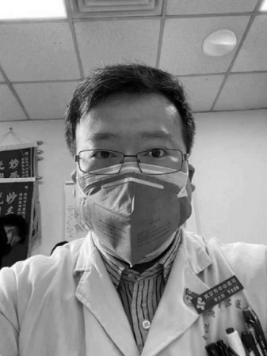
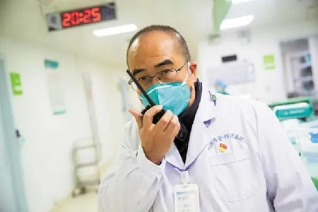

| 回到寝室主页 | ||||
| 首页 | 美食 | 景点 | 历史 | 疫情 |
|  | 李文亮（1985年10月-2020年2月7日），男，满族，籍贯辽宁省锦州市北镇市，武汉大学临床医学七年制专业毕业，中共党员。曾任武汉市中心医院眼科医生。 2019年12月30日下午5点多，他在武汉大学临床04级班级群里发布消息说“华南海鲜市场确诊了7例SARS”，提醒同为临床医生的同学“让家人亲人注意防范”。为了证明自己所言不虚，李文亮还在群里发出了一份写有“检出高置信度阳性指标 SARS冠状病毒阳性”的临床病原体筛查结果和患者胸部CT。一个小时后，他在群里补充称：“最新消息是冠状病毒感染确定了，正在进行病毒分型。” 2020年2月7日凌晨2点58分，武汉中心医院眼科医生李文亮在抗击新型冠状病毒感染的肺炎疫情工作中不幸感染，经全力抢救无效去世。 2020年3月6日，国家卫生健康委员会、人力资源和社会保障部、国家中医药管理局追授李文亮“全国卫生健康系统新冠肺炎疫情防控工作先进个人”称号。 2020年4月2日，李文亮被评定为烈士。4月20日，追授第24届“中国青年五四奖章”抗疫个人。 |
|||
张定宇，男，汉族，1963年12月出生于湖北省武汉市，祖籍河南省驻马店市确山县，中共党员，毕业于同济医科大学（现华中科技大学同济医学院），博士研究生学历，医学博士学位。曾任湖北省卫生健康委员会党组成员、副主任、公共卫生总师，现任湖北省医师协会会长、华中科技大学同济医学院附属协和医院教授、主任医师。 金银潭院长张定宇，一个战斗者，一个指挥者，也是一颗定心丸。我们在第一时间知道了金银潭医院，却在一个月以后才知道他。他知道自己患上了绝症，却要为患者、为社会燃起希望之光；他阻挡不了自己的病情，却用尽全力去把危重患者拉回来。他的双腿已经开始萎缩，但他站立的地方，是最坚实的阵地。 |
 | |||